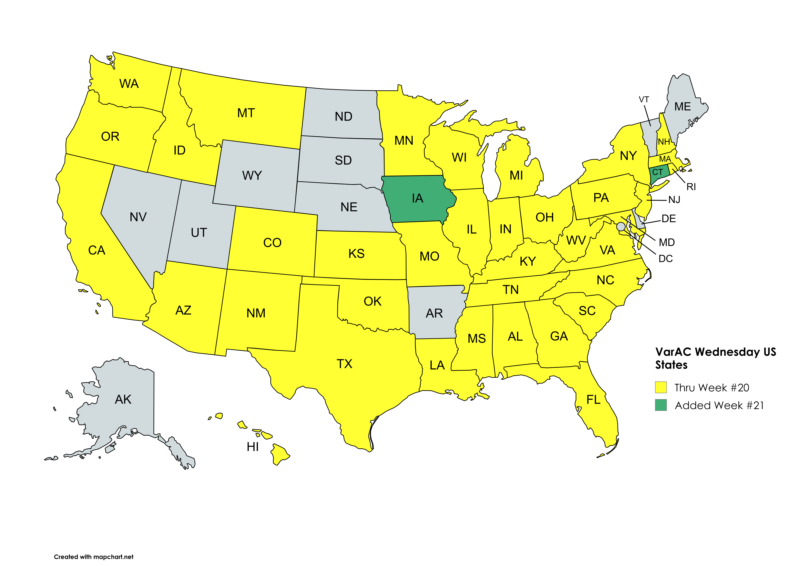
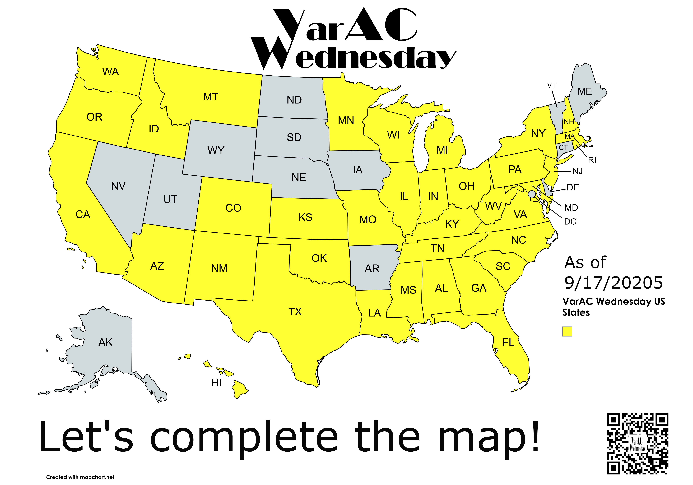

Week 22 Recap and VarAC Birtyday Award application
October 7, 2025
We have posted the Week #22 Re-cap video and it has instructions on how to apply for the VarAC Wednesday Birthday award certificate. You must check-in this week in order to qualify for the certificate. Don't forgot to check-in to VarAC Wednesday on October 8th!
Week 21 Recap video posted
September 29, 2025 The Week #21 Re-cap video has been posted. In the video we recognize new VarAC PIONEERS, operators who checked in for the first time, and a special operating evening October 8th.
Map updated thru Week 21
September 29, 2025 In Week #21 we added Iowa and Connecticut and thirty-nine (39) of the fifty (50) states in the United States have checked into VarAC Wednesday. We are looking for operators to check-in from Alaska, Arkansas, Delaware, Maine, Nebraska, Nevada, North Dakota, South Dakota, Utah, Vermont, Washington DC, Wyoming. 
Let's Celebrate VarAC's birthday!
September 24, 2025 We have a special surprise in store for our October 8th, 2025 net. A very special VarAC Birthday Celebration
Let's complete the map!
September 22, 2025 Operators from thirty-seven (37) of the fifty (50) states in the United States have checked into VarAC Wednesday. We are looking for thireeen states + the District of Columbia. If you are a VarAC operator in one of the missing states below please consider checking into VarAC Wednesday. Let's complete the VarAC Wednesday map for the United States! We are looking for operators to check-in from Alaska, Arkansas, Connecticut, Delaware, Iowa, Maine, Nebraska, Nevada, North Dakota, South Dakota, Utah, Vermont, Washington DC, Wyoming. 
Congratulations to our VarAC Pioneers!
September 17, 2025 We have just completed VarAC Wednesday Week #20. Three operators have qualified for our VarAC Pioneer award. Check out our VarAC Pioneer Awardees page each week for updates to the list of operators who have qualified for this award.
GPS Format Checking tool
September 14, 2025 We have release resources to allow you to verify the GPS you in your check-in message is correct format. Use our GPS Coordinate Format Checker to verify your GPS confirms to standard our program uses to verify check-ins. Please see our VarAC Wednesday GPS working aid" for details on formats that we accept
GPS coordinates in check-in messages
August 30, 2025 We curretly look up participants' callsigns on QRZ.com to obtain GPS coordinate for plotting check-ins on the map. QRZ might contain outdated location data. Some operator operate portable and their location might change from week to week. Starting September 3rd, 2025 we will begin extracting GPS locations from check-in messages. Jason Johnson's VarAC GPS Setup (Static location) training walks through how to configure your VarAC settings to start uing this new feature.
VarAC Bot
August 29, 2025 - Check out Mark Rosneck's VarAC Notification Extension with VarAC Bot training. This extension to VarAC allows you to receive real-time alerts from your station on your Telegram account.
Why am I missing from the map?
August 29, 2025 - Wondering why your station is missing from the check-in map? Check out "Where am I on the check-in map?" training article.
Growth Award
July 31, 2025 - Be sure to get your VarAC Wednesday Growth Award and post it to your QRZ.com page!
We've got maps!
August 5, 2025 - We now have a check-in map that shows locations of participants and email gateways stations.
Growth Award
July 31, 2025 - Be sure to get your VarAC Wednesday Growth Award and post it to your QRZ.com page!
VarAC Wednesday in the news
July 25, 2025 - Check out Amateure Radio Collective of Western Carolina's (ARCWC) feature Announcing VarAC Wednesday.
Website Launch
July 13, 2025 - Check out our Official website Launch message.